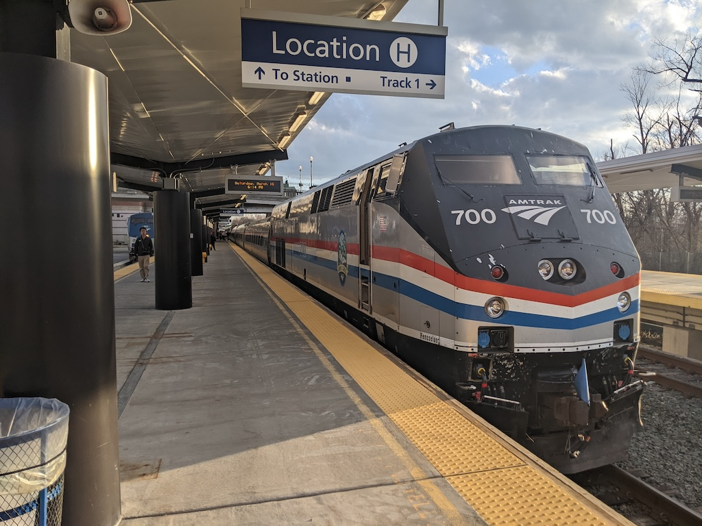
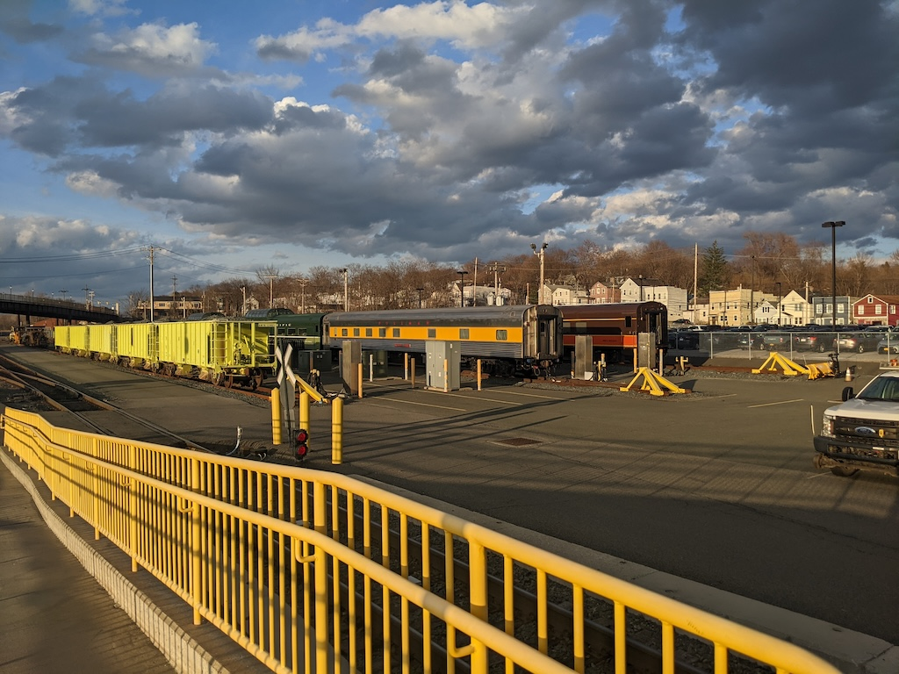
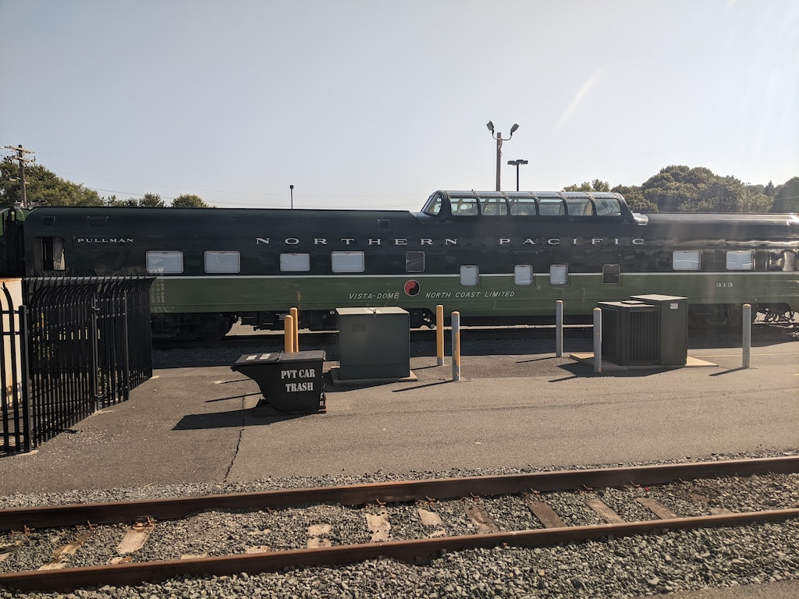
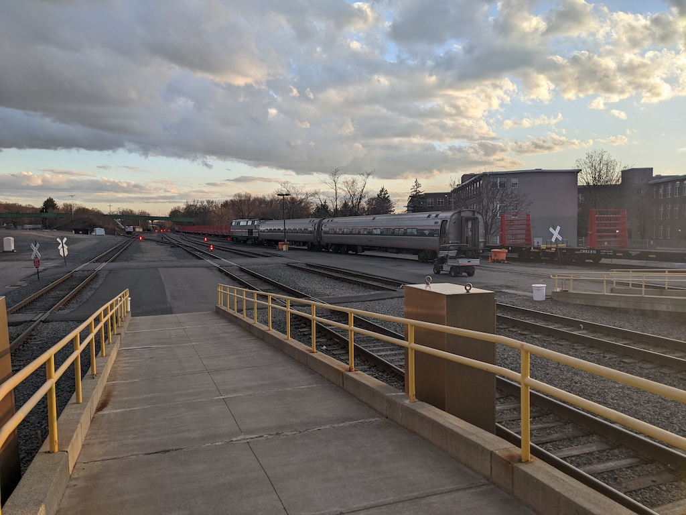
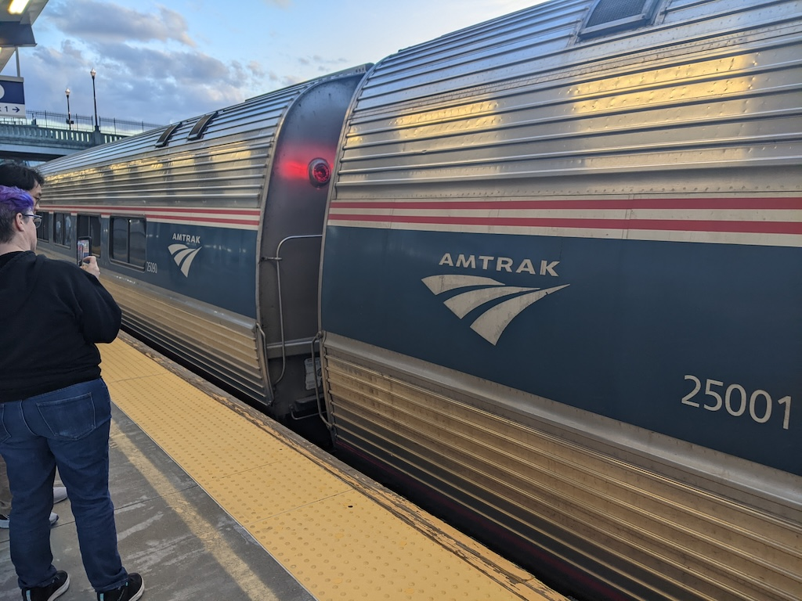

I wrote before that the most important ritual on the Lake Shore Limited is the is the engine change at Albany. Follow along for an illustrated discussion of that daily ritual.
Modes of power
There’s a tradition in railfan circles that non-electric operation within New York City is illegal. That may not be true: compare this story in the New York Times from 1970 and this analysis from Joseph Brennan. It’s certainly true that the railroad geography on Manhattan discourages it. The platforms at Grand Central Terminal and Pennsylvania Station are underground; their approaches feature miles of tunnels or runs in cuttings. Prolonged diesel operation there is bad for everyone’s health.
Most tracks in the United States are not electrified; the Northeast Corridor from Boston to Washington, D.C. via New York is a notable exception. Between New York and Albany, electrification ends at Croton–Harmon, roughly 30 miles north of Manhattan. Amtrak services running north out of New York range to St. Albans, Montreal, Buffalo, Toronto, and Chicago. All except that first 30 miles is on unelectrified track.
This isn’t a new problem and it isn’t a uniquely American problem. There are three ways you can tackle it:
- Passengers change trains.
- The train changes locomotives.
- The train operates using multiple modes (e.g. diesel and electric).
Amtrak operations in New York mix options 2 and 3. Amtrak trains between New York and Albany are pulled by an electro-diesel locomotive, so called because its traction motors are powered either by an onboard diesel prime mover or from third-rail electrification. In Albany, where Amtrak has substantial terminal facilities, these locomotives are exchanged for standard diesel-electric locomotives for the rest of the journey. Inbound, the process is reversed.
Platforms
We arrive in Albany at 6:11 PM, nine minutes early. The Lake Shore Limited adds a further wrinkle to the engine change: in Albany, the train splits/combines with another section that serves Boston. They’re early too–arrived at 5:51 PM, scheduled for 6:10 PM. Our combined train is scheduled to leave at 7:05 PM. We don’t need that much time for all the various operations and that’s good, because we’re not the only train here!

Albany has two island platforms and four tracks, numbered 3, 1, 2, and 4 from east to west. The Boston section of the Lake Shore Limited is on track 3. The New York section is on track 1. On track 4, facing toward New York, is the Maple Leaf, on its way from Toronto. Track 2 is empty. The Boston section was lead by diesels; the other two trains have electro-diesels. It’s the Tower of Hanoi puzzle, but with trains.
Let’s go for a stroll
My platform is a little over one thousand feet long. I see one of the on-board staff running laps from one end of the other. At the north end you can see the storage tracks where some private cars live. If you’re a person or a company and you own your own railroad cars, you can arrange for Amtrak to move them on the back of a scheduled train. Sometimes these “moves” are open to the public, sometimes not. It’s a world that I’m aware of but not really participating in.

Today some stone cars block the view a bit, but I can see a pair of Vista-Domes in Northern Pacific livery. At the end is Pacific Union, a sleeping car originally built for the Union Pacific Railroad in 1950 and now part of Webb Rail’s charter fleet. Those two domes are probably #313 and #549, respectively a dome sleeping car and dome coach. It’s not in any of my shots, but I saw Babbling Brook as we pulled out of Albany.

Meanwhile, electro-diesel #704 is coming down track 2 with two Amfleet I coaches. These will couple on to the front of the Maple Leaf, adding about 144 seats for short-haul traffic between Albany and New York. While 704 gets staged beyond the platforms, the crews have uncoupled diesel-electric #101 from the Maple Leaf on track 4. It will pull away, and then back up on track 2 toward the engine terminal north of the station.

With the Maple Leaf assembled, it’s our turn. Electro-diesel #700 has long since headed off to the engine terminal. The Boston section pulls forward from track 3, then backs on to track 1. The sections are coupled together, and in short order we’re ready to leave Albany.

Reflections
My wife kids me that us passengers are all out on the platform to supervise. We wish! Still, it’s a nice evening and power’s out on the train while the engines are shuffling around. Smokers get their fix in. People stretch. If you want, there’s time enough to go up into the station and get snacks.
Also, Albany’s the best place for this sort of thing. Amtrak also does engine swaps in Philadelphia[1], New Haven, and Washington, D.C., and the Empire Builder splits and recombines in Spokane. The Spokane operations happen in the wee hours of the morning and the Washington operations take place on the low-level through platforms, with less visibility. New Haven’s decent, with high-level platforms and a fair amount of activity, but I prefer Albany.
For the Pennsylvanian, which runs from Pittsburgh to New York. Electrification extends to Harrisburg; I assume it’s done in Philadelphia instead since the train reverses direction there anyway, and they can run everything out of the Race Street Yard. ↩︎